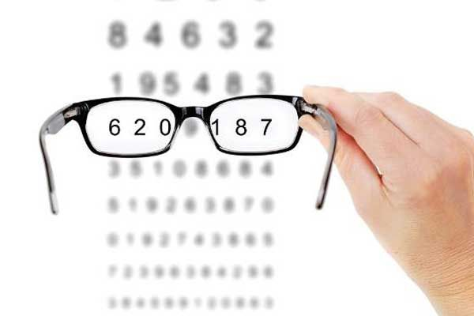

Các bệnh về mắt thường có giai đoạn ban đầu nhẹ nhàng, thậm chí gần như không có biểu hiện cụ thể. Bên cạnh đó, những dấu hiệu bệnh lý về mắt thường bị nhầm lẫn với tình trạng mỏi mắt thông thường, thị lực của người bệnh vẫn chưa bị suy giảm rõ rệt.
Do vậy, tương tự như việc đi khám sức khỏe định kỳ, việc thường xuyên đi khám mắt sẽ giúp bạn phát hiện được căn bệnh liên quan tới mắt ngay từ khi chúng còn ở thể nhẹ. Từ đó kịp thời can thiệp và chữa trị, giúp đôi mắt khỏe mạnh.
Kiểm tra, rà soát các tật khúc xạ: Tật khúc xạ là những loại tật liên quan đến mắt như cận thị, loạn thị hay viễn thị. Tật khúc xạ thường gặp ở lứa tuổi học sinh, sinh viên, người làm việc văn phòng thường xuyên tiếp xúc với máy tính. Những người ở lứa tuổi này nên thường xuyên đi khám mắt, đo thị lực, đo khúc xạ để theo dõi độ cận/loạn một cách chính xác nhất.
Phát hiện các bệnh lý đáy mắt: Bệnh lý đáy mắt chỉ những bệnh lý liên quan đến võng mạc như võng mạc cao huyết áp, bong võng mạc, thoái hóa hoàng điểm, đục thủy tinh thế,… Đây là nguyên nhân chính gây giảm thị lực, dẫn tới mất thị lực, mù lòa hàng đầu. Không chỉ người cao tuổi mà người lớn trưởng thành cũng có nguy cơ bị mắc các bệnh lý đáy mắt này.
Nếu không thường xuyên đi khám mắt định kỳ, bạn cần chú ý tới những dấu hiệu sau để kịp thời đi khám mắt
Thường xuyên thấy mỏi mắt, khô mắt, đau mắt
Mỏi, khô hay nhức mắt thường bị bỏ qua vì đây là những dấu hiệu rất thường gặp, đặc biệt với những người thường xuyên làm việc, học tập với máy tính. Khi gặp những tình trạng này, bạn nên tạm ngừng công việc, thư giãn mắt bằng cách nhắm mắt, mắt xa bầu mắt trong vòng 30-40 giây. Tuy nhiên, khi những dấu hiệu này liên tục lặp lại với tần suất dày đặc, bạn cần đi khám mắt để phát hiện các bệnh lý về mắt.
Mắt mờ dần, thị lực giảm sút
Có nhiều nguyên nhân dẫn tới tình trạng mắt mờ hay thị lực giảm. Với lứa tuổi học sinh – sinh viên hay những người làm việc nhiều với máy tính, đó có thể là dấu hiệu của tật cận thị và loạn thị. Nếu mắt không nhìn rõ và cảm thấy lóa mắt, sợ ánh sáng sau một chấn thương hay va đập, bạn cần lập tức đi khám mắt để tránh các tổn thương nặng hơn ở võng mạc.
Loạn thị là gì?
Loạn thị là một tình trạng tật khúc xạ thông thường gây ra thị lực mờ. Bệnh xảy ra khi giác mạc có hình dạng không đều hoặc đôi khi vì độ cong của thủy tinh thể bên trong mắt.
Một khi giác mạc hoặc thủy tinh thể có hình dạng không đều sẽ ngăn không cho ánh sáng tập trung chính xác vào võng mạc, do đó, khiến tầm nhìn bị ảnh hưởng.
Phân biệt mắt loạn thị với mắt cận thị như thế nào?
Triệu chứng loạn thị được biểu hiện như thế nào?
Các triệu chứng loạn thị thường gặp gồm có:
Nguyên nhân mắt bị loạn thị
Điều trị tật loạn thị của mắt
Viễn thị là gì?
Mắt viễn là mắt có tình trạng không thể nhìn rõ các vật ở gần nhưng lại có thể nhìn rõ các vật thể ở xa. Mắt viễn có thể ảnh hưởng đến khả năng tập trung của bạn.
Triệu chứng khi mắt bị tật viễn thị
Các nguyên nhân dẫn đến viễn thị là gì?
Điều trị viễn thị